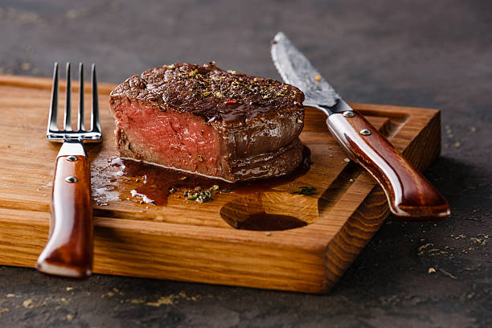

Tenderloin Steak

Description
The perfect steak for a romantic dinner! With the reverse sear method, you can really reclaim control of exactly how you want to cook your steak!
Ingredients:
- 2 fillets of tenderloin steak
- Garlic Powder
- Salt
- Black Pepper
- Canola oil
- Butter
Steps:
- Dry steak and let sit at room temp for 10 minutes
- Pre-Heat oven to 200 degrees fahrenheit
- Place steak on a baking sheet and let cook for 18-20 min (rare); 20-23 minutes (medium rare); 23-26 min (medium well)
- Once the oven time is up, take out steak and pat dry
- Season both sides of the steak with salt, black pepper, and garlic powder
- Let steak rest at room temp for approx. 10 minutes
- While you let steak rest, pre-heat skillet at medium-high heat with canola oil
- Once the skillet is up to heat and the 10 minutes of rest are up, throw steak on skillet; sear each side for 2 minutes
- When you are searing the the second side, throw butter in the skillet to baste the steak
- Plate steak and let sit for a couple minutes before cutting
- Serve and Enjoy!